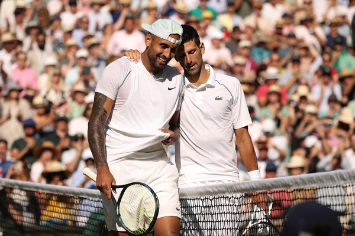

Quel est le joueur qui pourrait représenter la plus grande menace pour la domination de Novak
Djokovic à Wimbledon ?
WOODBRIDGE: "Djokovic est probablement le favori le plus lourd à Wimbledon que j'ai vu depuis très
longtemps. Je n'ai pas vu le concurrent (pour le défier) cette année jusqu'au Queen's Club. Je ne
pense toujours pas à Alcaraz, plus cinq sets, a la constance de la concentration sur l'herbe pour
obtenir Novak. Nous savons qu'il a le jeu pour le battre. Le résultat à Queen's, cependant ; je ne
m'attendais pas à ce qu'Alcaraz gagne ce tournoi. Gagner Queen's avait été un grand précurseur pour
continuer et bien faire à Wimbledon, sinon le gagner, pendant des années 40 à 50. Automatiquement,
ces matchs supplémentaires qu'Alcaraz a obtenus tout au long de cette semaine, et cette confiance,
sont vraiment ce qui fait de lui ce candidat qui peut vraiment inquiéter Novak.
OLIK: "Je pense qu'Alex (de Minaur) est un joueur qui pourrait déranger Novak, à 100%. Je pense que
la raison pour laquelle il est différent de beaucoup de joueurs sur gazon est qu'il ne se contente
pas de s'engager dans des échanges en utilisant de gros topspin Il trouve un moyen d'aplatir la
balle sur son coup droit, son revers. Il peut frapper un coup droit à l'envers où il efface la
balle, Il peut atténuer la balle de son revers (aussi). Il dérape et déplace constamment la balle.
du terrain ; peu de gars utilisent probablement ces coups autant. Il peut se faufiler ; il est
devenu si capable et confiant, rien qu'en le regardant à Queen's. Il peut aussi prendre du temps et
précipiter le ballon ; il peut se tenir debout sur la ligne de base et la faire monter constamment,
ce que tout le monde n'a pas non plus les compétences et la confiance nécessaires pour le faire. Il
est très capable.
.svg)